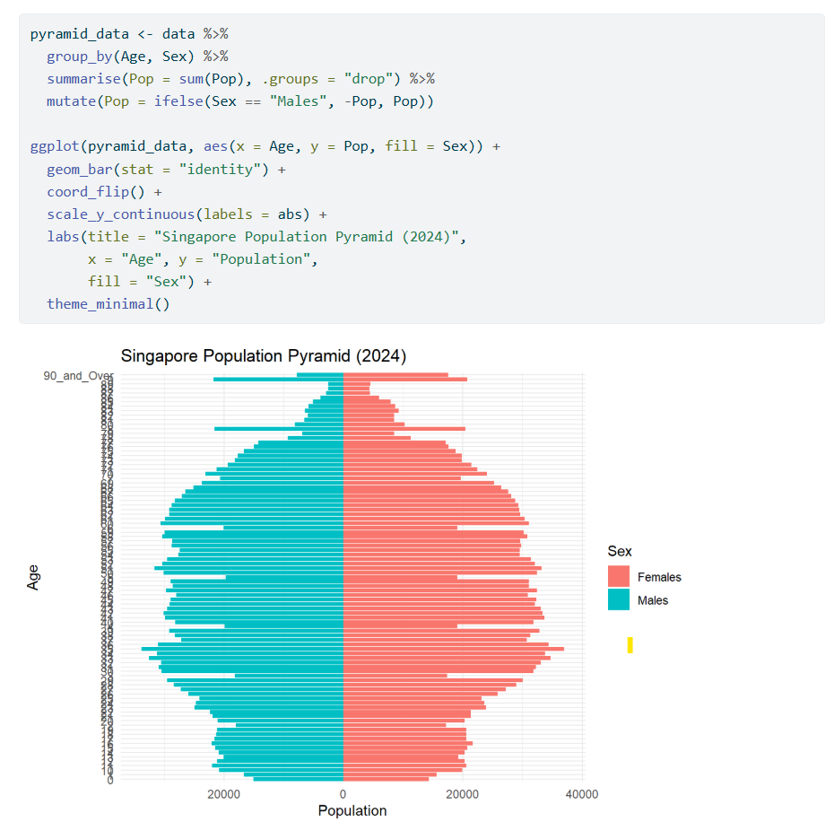

library("pacman")
suppressWarnings(library("lubridate"))
library(readr)
Resident_Data <- read.csv("data/Resident_Data.csv")
pacman::p_load(tidyverse, readxl,
janitor, lubridate,
ggplot2, ggthemes,
scales, ggridges,
ggdist, patchwork)Take-Home Exercise 1 - Part 2
Overview
In this part of my take home exercise, I will be making a critique on one of my classmate’s website, Rajesh, and I will also determine on what are the areas that can be improved to mzke the website more neat and professional.
However, I will first import the dataset so that the new codes will be able to function normally.
1 What is good on the website?
The most good first impression that I can imply from his website is the Information that he has populated to his webpage. Rajesh has made significantly good progress on his webpage. The top three impressions that I have from his website are the following:
1.1 Clear Narrative Structure
Rajesh’s site follows a well-organized structure with clearly labeled sections: Introduction, Getting Started, Data Wrangling, Exploratory Data Analysis, and Conclusion. This logical flow enhances readability and comprehension.
1.2 Effective Data Cleaning and Preparation
The data wrangling process is thorough, including steps like filtering for Singapore observations, selecting relevant variables, checking for duplicates and missing values, and renaming columns. This meticulous approach ensures data integrity for analysis.
Such good data cleaning that has been implemented by Rajesh are as follows:
glimpse(Resident_Data)Rows: 75,696
Columns: 7
$ PA <chr> "Ang Mo Kio", "Ang Mo Kio", "Ang Mo Kio", "Ang Mo Kio", "Ang M…
$ Subzone <chr> "Ang Mo Kio Town Centre", "Ang Mo Kio Town Centre", "Ang Mo Ki…
$ AG <chr> "0_to_4", "0_to_4", "0_to_4", "0_to_4", "0_to_4", "0_to_4", "0…
$ Sex <chr> "Males", "Males", "Males", "Males", "Males", "Males", "Females…
$ FA <chr> "<= 60", ">60 to 80", ">80 to 100", ">100 to 120", ">120", "No…
$ Pop <int> 0, 10, 10, 50, 10, 0, 0, 0, 20, 30, 10, 0, 0, 10, 30, 70, 20, …
$ Year <int> 2024, 2024, 2024, 2024, 2024, 2024, 2024, 2024, 2024, 2024, 20…1.3 Good Visualizations techniques used
Rajesh employs various ggplot2 visualizations to explore the distribution of students’ performance and their relationship with factors like gender, school type, and socioeconomic status. The use of ridgeline plots and other advanced ggplot2 features adds depth to the analysis.
One such insightful visualization that has been implemented by Rajesh are as folows:
2 What can be improved in this website?
There are, however, certain improvements that could be made to his website. The areas that can be further improved are shown as follows:
2.1 Visual Design Consistency
The content for his website is already good and well-structured, however there are certain graphs that could be further improved to enhance aesthetic appeal and user engagement.
One of the visualisation graphs that I feel can be further improved is the Visualisation 1: Singapore Population Pyramid (2024) graph. The image below shows his codes and the resulting graph output of his code:

We can see from the above that the graph does not show “enough Information”. By the term “enough Information”, the graphs looks uneasy to read and it is difficult to visualise on which Age group has the highest number of population.
Therefore, the following is the recommended code for one of his graphs that could be improved:

pyramid_data <- aggregate(Pop ~ `AG` + Sex, data = Resident_Data, sum)
age_order <- c("0_to_4", "5_to_9", "10_to_14", "15_to_19", "20_to_24", "25_to_29",
"30_to_34", "35_to_39", "40_to_44", "45_to_49", "50_to_54", "55_to_59",
"60_to_64", "65_to_69", "70_to_74", "75_to_79", "80_to_84", "85_to_89",
"90_and_over")
pyramid_data$AG <- factor(pyramid_data$AG, levels = age_order)
pyramid_data$Pop[pyramid_data$Sex == "Males"] <- -pyramid_data$Pop[pyramid_data$Sex == "Males"]
ggplot(data = pyramid_data, aes(x = AG, y = Pop, fill = Sex)) +
geom_bar(stat = "identity") +
coord_flip() +
labs(title = "Population Pyramid (2024)", x = "Age Group", y = "Population") +
scale_y_continuous(labels = comma) +
scale_fill_manual(values = c("skyblue", "salmon")) +
theme_minimal() +
theme(axis.text.y = element_text(size = 10)) The above improved graph and codes ensures a fair and easier visualisation for both himself and potentially to whoever will see his website. Furthermore, this set of improved codes can also ensure professionalism and tidyness when Rajesh were to expose his website to his stakeholders or even the members of the public.
2.2 Website tidyness
Another area of visualisation that needs to be improved besides the graphs is also the website itself. Despite Rajesh’s tireless efforts to render and complete his tasks, his website still needs further house-keeping.
One improvement recommendation that could be done is to perhaps add sections and a scenario to further visualise on whatever he is doing. Furthermore, when visualising graphs, it is also recommended for Rajesh to seperate out the codes and the plots by using the :::panel-tabset function
3 Conclusion and remarks
Rajesh’s website has been a good website after all, however, this website is not as professional as it seems as the website looks quite untidy and there are messy data visualizations, which could be difficult to read. With the improvement of the visualisations above, it is believed that this website could have a good revamp on future take home exercises and projects